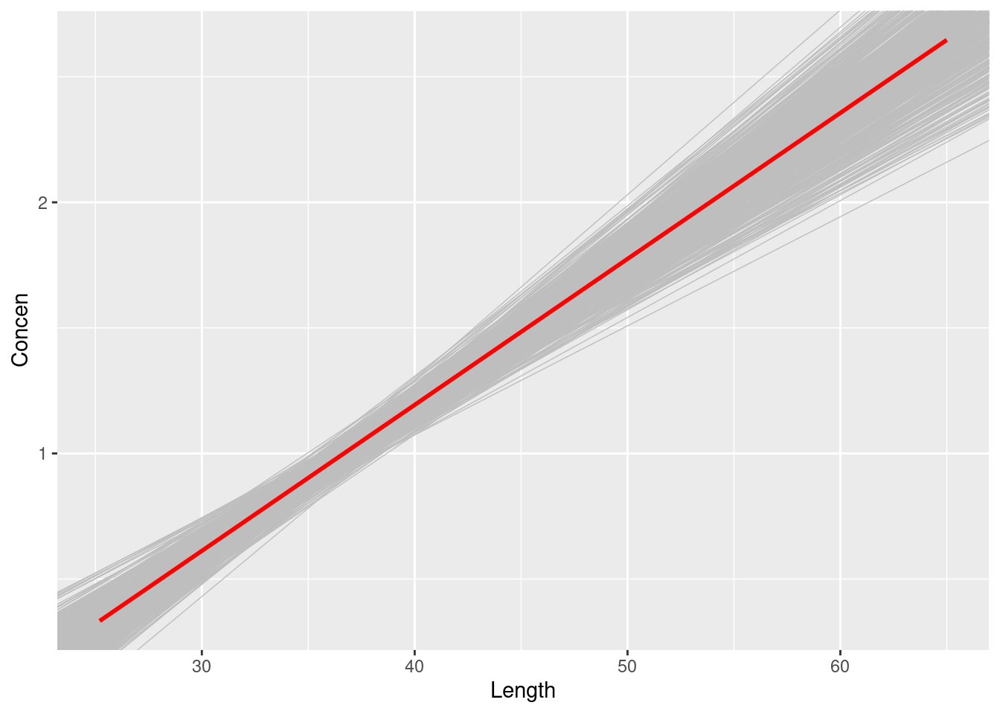
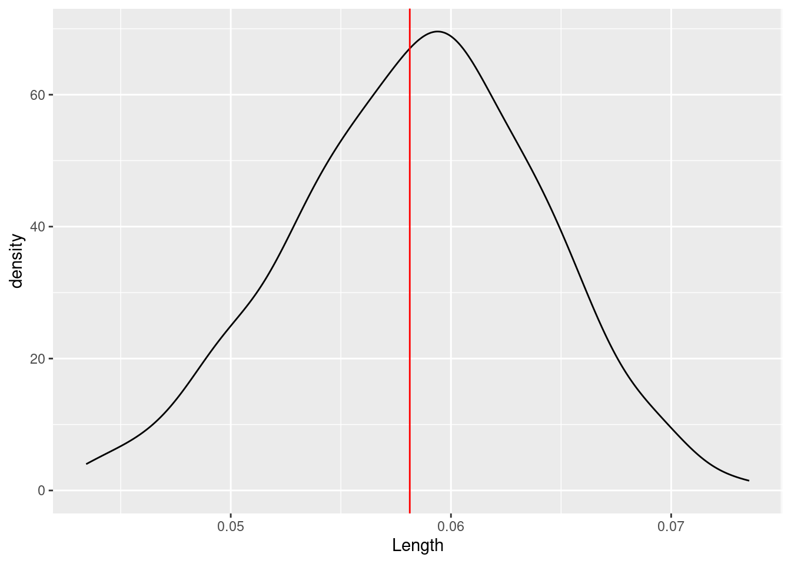
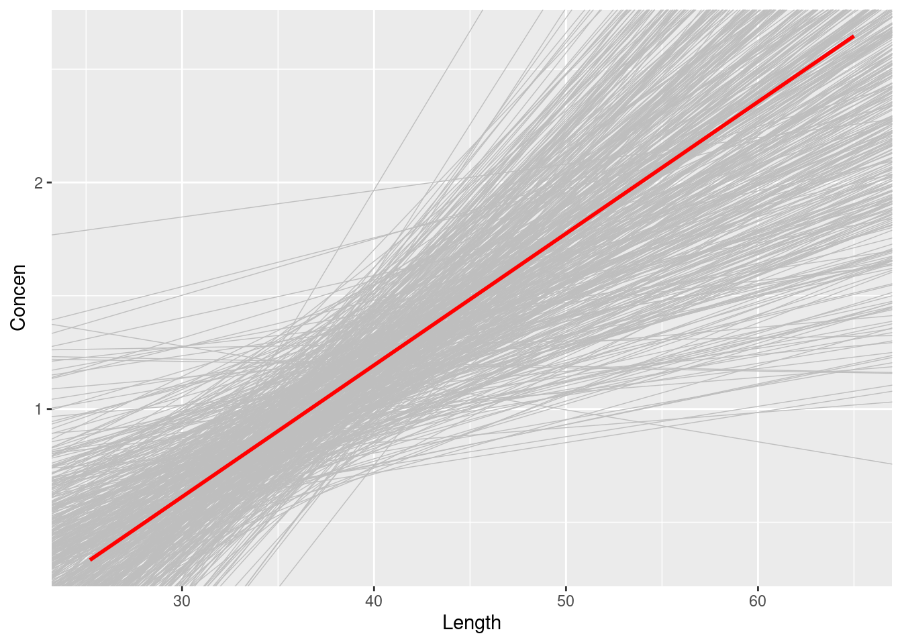
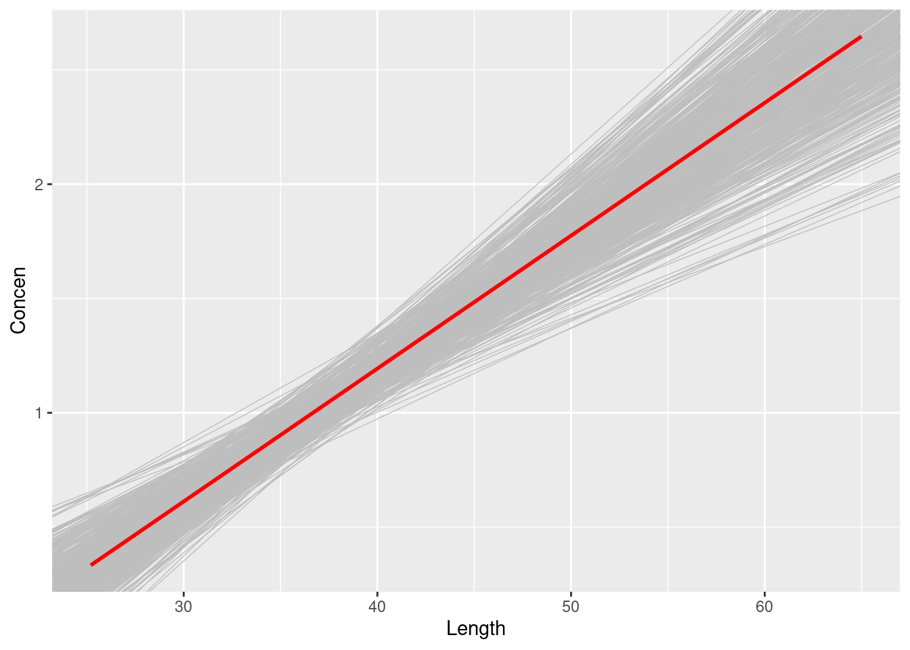
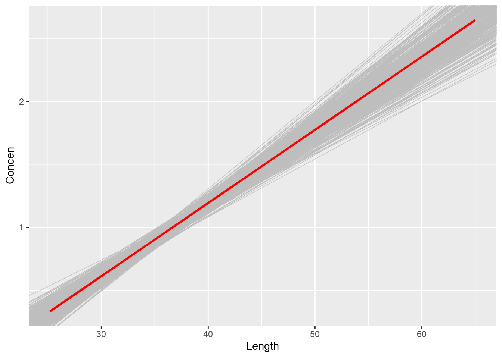
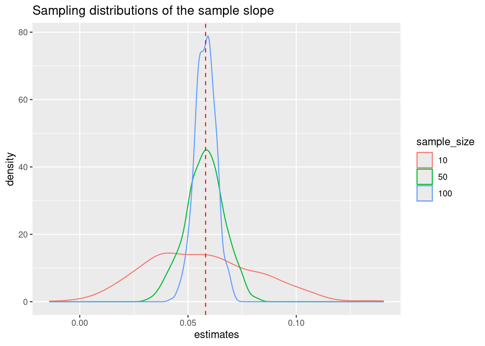

# Load the data & packages
library(tidyverse)
library(readr)
fish <- read_csv("https://Mac-STAT.github.io/data/Mercury.csv")Sampling distributions, the CLT, and Bootstrapping
Notes
Learning goals
Let \(\beta\) be some population parameter and \(\hat{\beta}\) be a sample estimate of \(\beta\). Our goals for the day are to:
- use simulation to solidify our understanding of sampling distributions and standard errors
- explore and compare two approaches to approximating the sampling distribution of \(\hat{\beta}\):
- Central Limit Theorem (CLT)
- bootstrapping
- explore the impact of sample size on sampling distributions and standard errors
Readings and videos
Please watch/do the following videos and readings before class:
- Reading: Section 6.7 in the STAT 155 Notes
- Video 1: sampling distributions
- Video 2: Central Limit Theorem
- Video 3: bootstrapping
Warm-Up
Rivers contain small concentrations of mercury which can accumulate in fish. Scientists studied this phenomenon among largemouth bass in the Wacamaw and Lumber rivers of North Carolina.
One goal of this study was to explore the relationship of a fish’s mercury concentration (Concen) with its size, specifically its Length:
\[ E(Concen | Length) = \beta_0 + \beta_1 Length \]
To this end, they caught and evaluated 171 fish, and recorded the following:
| variable | meaning |
|---|---|
| River | Lumber or Wacamaw |
| Station | Station number where the fish was caught (0, 1, …, 15) |
| Length | Fish’s length (in centimeters) |
| Weight | Fish’s weight (in grams) |
| Concen | Fish’s mercury concentration (in parts per million; ppm) |
Plot and model the relationship of mercury concentration with length:
fish %>%
ggplot(aes(y = Concen, x = Length)) +
geom_point() +
geom_smooth(method = "lm", se = FALSE)
fish_model <- lm(Concen ~ Length, data = fish)
coef(summary(fish_model))- In the summary table, is the
Lengthcoefficient 0.058 the population parameter \(\beta_1\) or a sample estimate \(\hat{\beta}_1\)?
Your response here
Since we don’t know \(\beta_1\), we can’t know the exact error in \(\hat{\beta}_1\)! This is where sampling distributions come in.
They describe how estimates \(\hat{\beta}_1\) might vary from sample to sample, thus how far these estimates might fall from \(\beta_1\):

For each of the concepts in the diagram above (Superpopulation, Finite Population, Sample), these represent for this specific data example:
Superpopulation: The true underlying process that governs the relationship between mercury concentration and length of fish, for every fish that has ever existed and ever will exist in these two rivers!
Finite Population: At the time the data was collected, the true observed relationship between mercury concentration and length of fish, for all fish in the two rivers at that time.
Sample: In our data, the observed/estimated relationship between mercury concentration and length of fish (this is \(\hat{\beta}_1\)!).
In the previous activity, each student took 1 sample of 10 observations.
This gave us a quick sense of how these estimates could vary from sample to sample.
When trying to understand/approximate our sampling distribution, there are two main approaches we can take:
- When our sample size n is “large enough”, we might approximate the sampling distribution using the CLT:
\[\hat{\beta}_1 \sim N(\beta_1, \text{standard error}^2)\]
The standard error in the CLT is approximated from our sample via some formula \(c / \sqrt{n}\) where “c” is complicated.
Obtain and interpret this standard error from the model summary table:
coef(summary(fish_model))- Our second option is something called bootstrapping. It turns out that we can actually resample from our observed data, to approximate the sampling distribution of our estimate! If it feels somewhat magical to you that this works out, that’s a very reasonable feeling.
The saying “to pull oneself up by the bootstraps” is often attributed to Rudolf Erich Raspe’s 1781 The Surprising Adventures of Baron Munchausen in which the character pulls himself out of a swamp by his hair (not bootstraps). In short, it means to get something from nothing, through your own effort:

In this spirit, statistical bootstrapping doesn’t make any probability model assumptions. It uses only the information from our one sample to approximate standard errors.
REFLECT
Great! We have two options. Here are some things to think about / reflect on:
- We can approximate the sampling distribution and standard error using the CLT. BUT:
- the quality of this approximation hinges upon the validity of the Central Limit theorem which hinges upon the validity of the theoretical model assumptions, as well as a large sample size
- the CLT uses theoretical formulas for the standard error estimates, thus can feel a little mysterious without a solid foundation in probability theory
- We can approxiate the sampling distribution and standard error using bootstrapping. BUT:
- it feels magical. The statistical theory behind bootstrapping is quite complicated, and there are certain obscure cases (none that we will encounter in Stat 155) where the assumptions underlying bootstrapping fail to hold
Neither approach is perfect, but they complement one another. Bootrapping in particular, while it cannot and should not replace the CLT, gives us some nice intuition behind the idea of resampling, which is fundamental for hypothesis testing (which we’ll get to shortly!).
Reflect: Before testing them out, what questions do you have about either approach? What do you think would help you build more intuition for the CLT and/or bootstrapping? Does one approach resonate with you more than the other?
Exercises
Exercise 1: 500 samples of size 10
Recall that we can sample 10 observations from our dataset using sample_n():
# Run this chunk a few times to explore the different samples you get
fish %>%
sample_n(size = 10, replace = TRUE)We can also take a sample and then use the data to estimate the model:
# Run this chunk a few times to explore the different sample models you get
fish %>%
sample_n(size = 10, replace = TRUE) %>%
with(lm(Concen ~ Length))We can also take multiple unique samples and build a sample model from each.
The code below obtains 500 separate samples of 10 fish, and stores the model estimates from each:
# Set the seed so that we all get the same results
set.seed(155)
# Store the sample models
sample_models_10 <- mosaic::do(500)*(
fish %>%
sample_n(size = 10, replace = TRUE) %>%
with(lm(Concen ~ Length))
)
# Check it out
head(sample_models_10)
dim(sample_models_10)What’s the point of the
do()function?!? If you’ve taken any COMP classes, what process do you thinkdo()is a shortcut for?What is stored in the
Intercept,Length, andr.squaredcolumns of the results?We’ll obtain a bootstrapping distribution of \(\hat{\beta}_1\) by taking many (500, in this case) different samples of every fish in our dataset (171 of them) and exploring the degree to which \(\hat{\beta}_1\) varies from sample to sample.
Edit the code below to obtain a bootstrapping distribution.
# Set the seed so that we all get the same results
set.seed(155)
# Store the sample models
sample_models_boot <- mosaic::do(___)*(
fish %>%
sample_n(size = ___, replace = TRUE) %>%
with(lm(Concen ~ Length))
)Exercise 2: Why “resampling” (replace = TRUE)?
Let’s wrap our minds around the idea of resampling, before coming back to our boostrapping distribution, using a small example of 5 fish:
# Define data
small_sample <- data.frame(
id = 1:5,
Length = c(44, 43, 54, 52, 40))
small_sampleThis sample has a mean Length of 46.6 cm:
small_sample %>%
summarize(mean(Length))- The chunk below samples 5 fish without replacement from our
small_sampleof 5 fish, and calculates their mean length. Run it several times. How do the sample and resulting mean change?
sample_1 <- sample_n(small_sample, size = 5, replace = FALSE)
sample_1
sample_1 %>%
summarize(mean(Length))- Sampling our sample without replacement merely returns our original sample. Instead, resample 5 fish from our
small_samplewith replacement. Run it several times. What do you notice about the samples? About their mean lengths?
sample_2 <- sample_n(small_sample, size = 5, replace = TRUE)
sample_2
sample_2 %>%
summarize(mean(Length))Resampling our sample provides insight into the variability, hence potential error, in our sample estimates. (This works better when we have a sample bigger than 5!) As you observed in part b, each resample might include some fish from the original sample several times and others not at all.
Bonus Fact: Sampling with replacement also ensures that our resampled observations are independent, which we need in order for bootstrapping to “work”!
Exercise 3: Sampling distribution
Check out the resulting 500 bootstrapped sample models:
fish %>%
ggplot(aes(x = Length, y = Concen)) +
geom_smooth(method = "lm", se = FALSE) +
geom_abline(data = sample_models_boot,
aes(intercept = Intercept, slope = Length),
color = "gray", size = 0.25) +
geom_smooth(method = "lm", color = "red", se = FALSE)Let’s focus on the slopes of these 500 sample models.
A plot of the 500 slopes approximates the sampling distribution of the sample slopes.
sample_models_boot %>%
ggplot(aes(x = Length)) +
geom_density() +
geom_vline(xintercept = 0.05813, color = "red") Describe the sampling distribution:
What’s its general shape?
Where is it roughly centered?
Roughly what’s its spread / i.e. what’s the range of estimates you observed?
Exercise 4: Standard error
For a more rigorous assessment of the spread among the sample slopes, let’s calculate their standard deviation:
sample_models_boot %>%
summarize(sd(Length))Recall: The standard deviation of sample estimates is called a “standard error”.
It measures the typical distance of a sample estimate from the actual population value.
Compare the bootstrapped standard error to the standard error reported from our regression model (see the Std. Error column):
coef(summary(fish_model))Are they roughly equivalent?
Your response here
Exercise 5: Central Limit Theorem (CLT)
Recall that the CLT assumes that, so long as our sample size is “big enough”, the sampling distribution of the sample slope will be Normal.
Specifically, all possible sample slopes will vary Normally around the population slope.
Do your simulation results support this assumption? Why or why not?
Want more intuition into the CLT? Watch this video explanation using bunnies and dragons: https://www.youtube.com/watch?v=jvoxEYmQHNM
Exercise 6: Using the CLT
Let \(\hat{\beta}_1\) be an estimate of the (super)population slope parameter \(\beta_1\) calculated from a sample of 10 fish (sample_models_10).
Estimate the standard error of the slope from these resampled estimates
# Hint: Adapt the code from Exercise 5...You should get a SE of roughly 0.026.
Thus, by the CLT, the sampling distribution of \(\hat{\beta}_1\) is:
\[\hat{\beta}_1 \sim N(\beta_1, 0.26^2)\]
Use this result with the 68-95-99.7 property of the Normal model to understand the potential error in a slope estimate.
There are many possible samples of 10 fish. What percent of these will produce an estimate \(\hat{\beta}_1\) that’s within 0.052, i.e. 2 standard errors, of the actual population slope \(\beta_1\)?
More than 2 standard errors from \(\beta_1\)?
More than 0.079, i.e. 3 standard errors, above \(\beta_1\)?
Exercise 7: CLT and the 68-95-99.7 Rule
Fill in the blanks below to complete some general properties assumed by the CLT:
___% of samples will produce \(\hat{\beta}_1\) estimates within 1 st. err. of \(\beta_1\)
___% of samples will produce \(\hat{\beta}_1\) estimates within 2 st. err. of \(\beta_1\)
___% of samples will produce \(\hat{\beta}_1\) estimates within 3 st. err. of \(\beta_1\)
Exercise 8: Increasing sample size
Now that we have a sense of the potential variability and error in sample estimates, let’s consider the impact of sample size.
Suppose we were to increase our sample size from n = 10 to n = 50 or n = 100 fish. What impact do you anticipate this having on our sample estimates of the population parameters:
Do you expect there to be more or less variability among the sample model lines?
Around what value would you expect the sampling distribution of sample slopes to be centered?
What general shape would you expect that sampling distribution to have?
In comparison to estimates based on the samples of size 10, do you think the estimates based on samples of size 50 will be closer to or farther from the true slope (on average)?
Exercise 9: 500 samples of size n
Let’s increase the sample size in our simulation.
Fill in the blanks to take 500 samples of size 50, and build a sample model from each.
set.seed(155)
sample_models_50 <- mosaic::do(___)*(
fish %>%
___(size = ___, replace = FALSE) %>%
___(___(Concen ~ Length))
)
# Check it out
head(sample_models_50)Similarly, take 500 samples of size 100, and build a sample model from each.
set.seed(155)
sample_models_100 <- mosaic::do(___)*(
fish %>%
___(size = ___, replace = FALSE) %>%
___(___(Concen ~ Length))
)
# Check it out
head(sample_models_100)Exercise 10: Impact of sample size (part I)
Compare and contrast the 500 sets of sample models when using samples of size 10, 50, and 100.
# 500 sample models using samples of size 10
fish %>%
ggplot(aes(x = Length, y = Concen)) +
geom_smooth(method = "lm", se = FALSE) +
geom_abline(data = sample_models_10,
aes(intercept = Intercept, slope = Length),
color = "gray", size = 0.25) +
geom_smooth(method = "lm", color = "red", se = FALSE)# 500 sample models using samples of size 50
fish %>%
ggplot(aes(x = Length, y = Concen)) +
geom_smooth(method = "lm", se = FALSE) +
geom_abline(data = sample_models_50,
aes(intercept = Intercept, slope = Length),
color = "gray", size = 0.25) +
geom_smooth(method = "lm", color = "red", se = FALSE)# 500 sample models using samples of size 100
fish %>%
ggplot(aes(x = Length, y = Concen)) +
geom_smooth(method = "lm", se = FALSE) +
geom_abline(data = sample_models_100,
aes(intercept = Intercept, slope = Length),
color = "gray", size = 0.25) +
geom_smooth(method = "lm", color = "red", se = FALSE)- What happens to our sample models as sample size increases? Was this what you expected?
Exercise 11: Impact of sample size (part II)
Let’s focus on just the sampling distributions of our 500 slope estimates \(\hat{\beta}_1\).
For easy comparison, plot the estimates based on samples of size 10, 50, and 100 on the same frame:
# Don't think too hard about this code!
# Combine the estimates & sample size into a new data set
# Then plot it
data.frame(estimates = c(sample_models_10$Length, sample_models_50$Length, sample_models_100$Length),
sample_size = rep(c("10","50","100"), each = 500)) %>%
mutate(sample_size = fct_relevel(sample_size, c("10", "50", "100"))) %>%
ggplot(aes(x = estimates, color = sample_size)) +
geom_density() +
geom_vline(xintercept = 0.05813, color = "red", linetype = "dashed") +
labs(title = "Sampling distributions of the sample slope")- How do the shapes, centers, and spreads of these sampling distributions compare? Was this what you expected?
Exercise 12: Properties of sampling distributions
In light of your observations, complete the following statements about the sampling distribution of the sample slope.
For all sample sizes, the shape of the sampling distribution is roughly ___ and the sampling distribution is roughly centered around ___, the sample estimate from our original data.
As sample size increases:
The average sample slope estimate INCREASES / DECREASES / IS FAIRLY STABLE.
The standard error of the sample slopes INCREASES / DECREASES / IS FAIRLY STABLE.Thus, as sample size increases, our sample slopes become MORE RELIABLE / LESS RELIABLE.
Solutions
Exercise 1: 500 samples of size 10
do()repeats the code within the parentheses as many times as you tell it. do()` is a shortcut for a for loop.500 different sample estimates of the model
# Set the seed so that we all get the same results
set.seed(155)
# Store the sample models
sample_models_boot <- mosaic::do(500)*(
fish %>%
sample_n(size = 171, replace = TRUE) %>%
with(lm(Concen ~ Length))
)Exercise 2: Why “resampling” (replace = TRUE)?
The sample and the mean are the same every time!
If we rerun the code below multiple times, we’ll get different samples every time! Note that some of the observations are repeated (this is because of
replace = TRUE), but we actually obtain variation in our samples and their mean lengths.
sample_2 <- sample_n(small_sample, size = 5, replace = TRUE)
sample_2
## id Length
## 1 2 43
## 2 4 52
## 3 2 43
## 4 5 40
## 5 2 43
sample_2 %>%
summarize(mean(Length))
## mean(Length)
## 1 44.2Exercise 3: Sampling distribution
fish %>%
ggplot(aes(x = Length, y = Concen)) +
geom_smooth(method = "lm", se = FALSE) +
geom_abline(data = sample_models_boot,
aes(intercept = Intercept, slope = Length),
color = "gray", size = 0.25) +
geom_smooth(method = "lm", color = "red", se = FALSE)
sample_models_boot %>%
ggplot(aes(x = Length)) +
geom_density() +
geom_vline(xintercept = 0.05813, color = "red") 
The sampling distribution is symmetric, unimodal, and shaped like a bell curve!
It is roughly centered at the slope calculated from our entire sample!
Most of the estimates lie within the range 0.04 to 0.075.
Exercise 5: Standard error
# boostrapped se
sample_models_boot %>%
summarize(sd(Length))
## sd(Length)
## 1 0.005664586
# CLT se
coef(summary(fish_model))
## Estimate Std. Error t value Pr(>|t|)
## (Intercept) -1.13164542 0.213614796 -5.297598 3.617750e-07
## Length 0.05812749 0.005227593 11.119359 6.641225e-22They are basically identical! Both are about 0.005.
Exercise 5: Central Limit Theorem (CLT)
Recall that the CLT assumes that, so long as our sample size is “big enough”, the sampling distribution of the sample slope will be Normal.
Specifically, all possible sample slopes will vary Normally around the population slope.
- Do your simulation results support this assumption? Why or why not?
Yes! They support this assumption because the shape of sampling distribution is roughly normal (i.e. bell-shaped).
Exercise 6: Using the CLT
# Hint: Adapt the code from Exercise 5...
sample_models_10 %>%
summarize(sd(Length))
## sd(Length)
## 1 0.0253287795%
100% - 95% = 5%
(100 - 99.7)/2 = 0.15% (Note that we divide by two here, because we only want those above 3 SEs, not either above or below!)
Exercise 7: CLT and the 68-95-99.7 Rule
68% of samples will produce \(\hat{\beta}_1\) estimates within 1 st. err. of \(\beta_1\)
95% of samples will produce \(\hat{\beta}_1\) estimates within 2 st. err. of \(\beta_1\)
99.7% of samples will produce \(\hat{\beta}_1\) estimates within 3 st. err. of \(\beta_1\)
Exercise 8: Increasing sample size
Intuition, no wrong answer.
Exercise 9: 500 samples of size n
set.seed(155)
sample_models_50 <- mosaic::do(500)*(
fish %>%
sample_n(size = 50, replace = FALSE) %>%
with(lm(Concen ~ Length))
)
# Check it out
head(sample_models_50)
## Intercept Length sigma r.squared F numdf dendf .row .index
## 1 -1.310864 0.06393644 0.5646473 0.4846643 45.14316 1 48 1 1
## 2 -1.503983 0.06887405 0.6112830 0.5333146 54.85302 1 48 1 2
## 3 -1.730214 0.07140026 0.5940694 0.4561970 40.26725 1 48 1 3
## 4 -1.213346 0.05948225 0.5561451 0.4712989 42.78853 1 48 1 4
## 5 -1.221643 0.05925447 0.5471569 0.5190808 51.80887 1 48 1 5
## 6 -1.384057 0.06532957 0.5610290 0.5400105 56.35021 1 48 1 6Similarly, take 500 samples of size 100, and build a sample model from each.
set.seed(155)
sample_models_100 <- mosaic::do(500)*(
fish %>%
sample_n(size = 100, replace = FALSE) %>%
with(lm(Concen ~ Length))
)
# Check it out
head(sample_models_100)
## Intercept Length sigma r.squared F numdf dendf .row .index
## 1 -0.9745758 0.05400227 0.5965267 0.3361746 49.62917 1 98 1 1
## 2 -1.1187614 0.05655020 0.5864780 0.4173361 70.19301 1 98 1 2
## 3 -1.3507522 0.06512980 0.5629381 0.5332227 111.95023 1 98 1 3
## 4 -1.5201200 0.06712467 0.5220515 0.5113787 102.56432 1 98 1 4
## 5 -1.0181036 0.05525131 0.5746367 0.4031468 66.19447 1 98 1 5
## 6 -1.1369532 0.05868566 0.5773007 0.4378596 76.33367 1 98 1 6Exercise 10: Impact of sample size (part I)
# 500 sample models using samples of size 10
fish %>%
ggplot(aes(x = Length, y = Concen)) +
geom_smooth(method = "lm", se = FALSE) +
geom_abline(data = sample_models_10,
aes(intercept = Intercept, slope = Length),
color = "gray", size = 0.25) +
geom_smooth(method = "lm", color = "red", se = FALSE)
# 500 sample models using samples of size 50
fish %>%
ggplot(aes(x = Length, y = Concen)) +
geom_smooth(method = "lm", se = FALSE) +
geom_abline(data = sample_models_50,
aes(intercept = Intercept, slope = Length),
color = "gray", size = 0.25) +
geom_smooth(method = "lm", color = "red", se = FALSE)
# 500 sample models using samples of size 100
fish %>%
ggplot(aes(x = Length, y = Concen)) +
geom_smooth(method = "lm", se = FALSE) +
geom_abline(data = sample_models_100,
aes(intercept = Intercept, slope = Length),
color = "gray", size = 0.25) +
geom_smooth(method = "lm", color = "red", se = FALSE)
- The sample model lines become less and less variable from sample to sample.
Exercise 11: Impact of sample size (part II)
# Don't think too hard about this code!
# Combine the estimates & sample size into a new data set
# Then plot it
data.frame(estimates = c(sample_models_10$Length, sample_models_50$Length, sample_models_100$Length),
sample_size = rep(c("10","50","100"), each = 500)) %>%
mutate(sample_size = fct_relevel(sample_size, c("10", "50", "100"))) %>%
ggplot(aes(x = estimates, color = sample_size)) +
geom_density() +
geom_vline(xintercept = 0.05813, color = "red", linetype = "dashed") +
labs(title = "Sampling distributions of the sample slope")
- No matter the sample size, the sample estimates are normally distributed around the population slope. But as sample size increases, the variability of the sample estimates decreases.
Exercise 12: Properties of sampling distributions
In light of your observations, complete the following statements about the sampling distribution of the sample slope.
For all sample sizes, the shape of the sampling distribution is roughly normal and the sampling distribution is roughly centered around 0.05813, the sample estimate from our original data.
As sample size increases:
The average sample slope estimate IS FAIRLY STABLE.
The standard error of the sample slopes DECREASES.Thus, as sample size increases, our sample slopes become MORE RELIABLE.